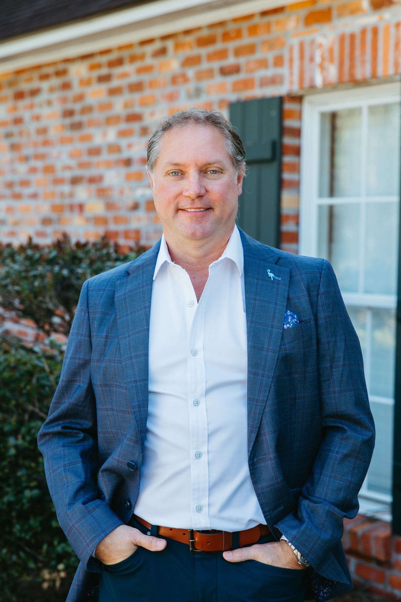

01 / STRATEGY
Business & Executive Consulting
Strategic planning, market positioning, organizational development and operating-model improvement.
We help ambitious organizations build stronger brands, develop exceptional leaders, modernize their digital presence and create the systems required to scale.
Strategic guidance and hands-on execution across the disciplines that shape business performance.
Strategic planning, market positioning, organizational development and operating-model improvement.
Modern websites, thoughtful user experiences, conversion-focused design and digital presence upgrades.
Search visibility, local SEO, content strategy, campaigns and qualified lead generation.
Brand positioning, identity systems, messaging, advertising and compelling market presence.
Leadership coaching, sales-process design, team development and accountability systems.
Workflow improvement, scalable processes, launch execution and multi-location operating support.
Whether you're strengthening an existing operation or planning a multi-market rollout, we help turn a compelling vision into an actionable model for execution.
Market evaluation · Standardized workflows · Brand consistency · Sales enablement · Performance measurement · Expansion planning
Our established healthcare consulting practice helps entrepreneurs and providers develop wellness businesses, navigate operating considerations and implement the infrastructure required to launch and grow.
Services include clinic launch planning, operational workflows, vendor coordination, brand development, marketing strategy and sales enablement. Clinical and legal decisions remain with appropriately licensed professionals.
Keep the detailed clinic-launch program available for prospective healthcare clients, while making room for the full scope of Marino Business Consulting's capabilities.
Note: Timelines and implementation depend on licensing, location, approvals and project scope.
Examples of business categories and engagements we support. Detailed case studies and verified client testimonials will be added with approval.
Launch strategy, business systems and growth support for wellness businesses.
Positioning, web experiences, marketing assets and conversion pathways.
Sales execution, leadership development and operating-model design.
Jude Marino brings 30 years of corporate experience in sales leadership, operations, team development and business growth.
Following a distinguished career in telecommunications leadership, Jude founded Marino Business Consulting to help organizations build stronger teams, more effective processes and compelling growth strategies. His work now spans healthcare business development, marketing, digital experiences and executive consulting.
“Bet on yourself.”
Work With Marino Business Consulting ↗
A career shaped by corporate leadership recognition and an entrepreneurial commitment to helping other businesses succeed.
Multiple Leader of the Year and sales leadership recognitions across a 30-year career.
Business and leadership storytelling through interviews and published profiles.
A consulting brand committed to strategy, operational discipline and ambitious outcomes.

Tell us about your goals, your organization and the challenges you're ready to solve.
Book a 30-Minute Strategy Call ↗